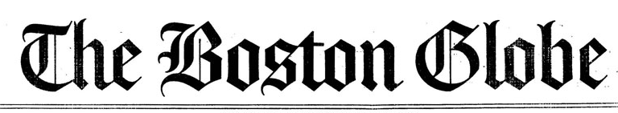

“Reviewing medical records for 7,770 people who tested positive for the coronavirus, Dr.
Tatonetti and a graduate student, Michael Zietz, found that people with Type A blood were at a somewhat
lower risk of being placed on ventilators. People who were Type AB were at a higher risk, but the scientists
cautioned that this result might not be reliable because there were so few patients with that blood type in
their analysis.”
Covid-19 Risk Doesn’t Depend (Much) on Blood Type, New Studies Find. July 15, 2020, Continue Reading
“The
team was pleased to find that height, obesity, diabetes, acne and sickle cell anemia all came out within a
few percentage points of more traditional research studies. The data set also offered potential heritability
data for about 400 items that had not previously been examined this way, including sinus infections, tooth
decay, irregular menstruation and thyroid disorders.”
‘Will You Be My Emergency Contact?’ Takes On a Whole New Meaning May 17, 2018, Continue
Reading
“Hoping to explore the genetics of drug reactions, graduate student Fernanda Polubriaginof
and others working in the lab of biomedical informatics researcher Nicholas Tatonetti at Columbia University
wanted to determine whether patients at the school’s affiliated NewYork-Presbyterian Hospital were
related.”
Family trees hidden in medical records could predict your disease risk, May 17,
2018, Continue
Reading
“Going
to the hospital means filling out forms, and somewhere on that form is a place to list an emergency contact,
with name, address, phone number, and relationship just in case. A study published Thursday in Cell found a
novel use for that information.”
Researchers mine emergency contacts to discover genetic clues to disease, May 17, 2018, Continue
Reading
“Because many people use relatives as their contact person and that contact might list
another relative or next-of-kin information on their own forms, researchers from Columbia University and
elsewhere were able to generate 223,000 family trees connecting blood relatives using electronic health
record data from 3.5 million patients at three medical centers in New York.”
Family Ties, May 17, 2018, Continue
Reading
“By examining big data in entirely new ways, the team uncovered several drug combinations
associated with increased risk of a potentially fatal heart arrhythmia. One pair included the popular
antibiotic ceftriaxone and the heartburn medication lansoprazole, a former blockbuster drug best known by
the brand name Prevacid.”
Scientists see progress in identifying deadly drug interactions, October 10, 2016, Continue
Reading
“Millions of Americans take more than one prescription drug, and often times doctors don’t
know which drugs, when combined, can cause serious illness or death. Sadly, such warnings come only after
the damage is done, when enough clear reports of adverse reactions begin to emerge. Now, scientists at
Columbia University in New York have harnessed the power of data science to identify two common prescription
drugs that, if mixed, can have deadly consequences.”
Deadly Mixture: Scientists Uncover Harmful Drug Interactions, October 10, 2016, Continue
Reading
“The research, which used a combination of adverse event data-mining, electronic health
record analysis and laboratory experiments, found that patients who received both drugs together were more
likely to experience drug-induced long QT syndrome (LQTS), a potentially fatal condition, than those who
received either drug alone.”
Study highlights drug-drug interaction risk from two commonly used drugs, October 12, 2016, Continue
Reading
“Investigators at Columbia University discovered that adverse event reports and electronic
health records, along with targeted tests, were effective in confirming the challenging-to-predict
interactions – pinpointing the peril of one specific combination therapy.”
Data mining, lab testing approach reveals ceftriaxone-lansoprazole interaction, October 20, 2016,Continue
Reading
“The experiment began with thousands of patient files, millions of prescription orders,
billions of clinical measurements and a single question: Could big data be used to discover deadly drug
combinations?”
Hunt for dangerous drug interactions reveals strategy that can save lives, February 11, 2016, Continue Reading
“The bite of a poisonous snake, scorpion or other venomous creature could very well kill
you, but it also might be able to heal certain medical conditions like cancer, diabetes and heart
failure”
Animal Venom Database Could Be Boon To Drug Development , November 29, 2015, Continue
Reading
“Sometimes what should hurt you, helps you, and what sounds like folklore turns out to be really science. The saliva of the Gila Monster, an orange speckled lizard native to the American Southwest, is poisonous – but it also can be used to effectively treat Type 2 diabetes…”VenomKB, a Therapeutic Natural Toxins Database, Makes Folklore Into Science , December 8, 2015,Continue Reading
“By
delving into the extensive database of patients seen at Columbia Medical Center over 14 years, beginning in
2000, Tatonetti and his team did a first-of-its kind look at whether birth month has anything to do with
disease risk.”
See What Diseases You’re at Risk For Based on Your Birth Month, June 8, 2015, Continue Reading
“Mary Regina Boland, Nicholas Tatonetti and other researchers at the Columbia University
Department of Medicine examined records for an incredible 1.75 million patients born between 1900 and 2000
who had been treated at Columbia University Medical Center. Using statistical analysis, they combed through
1,688 different diseases and found 55 that had a correlation with birth month.”
Scientists have discovered how the month you’re born matters for your health, June 15,
2015, Continue
Reading
“The
Columbia researchers also found that one in 675 occurrences of ADHD (attention deficit hyperactivity
disorder) could relate to being born in New York in November, which matches a Swedish study showing the
highest rates of ADHD in November babies.”
Could your birth month indicate your risk of disease?, June 9, 2015, Continue
Reading
“The results of this study should be interpreted carefully, researchers said. For one, the
study only examined data collected from one hospital in New York City; therefore, health data may be skewed
due to New York’s climate. Furthermore, sick patients tend to be overrepresented in electronic health
records, because, well, they are visiting the doctor more often.”
Your Birth Month Influences Your Risk for Diseases, June 9, 2015, Continue
Reading
“Columbia University scientists compiled the birthdays and medical records of patients from
New York City databases and found that people with May birthdays may have the healthiest outcomes, while
people born in October might be at the highest risk for certain diseases.”
Birth month may correlate to some diseases (bad news, October), June 8, 2015, Continue
Reading
[VIDEO] “Some people swear by the predictive powers of zodiac signs. And while there’s no
scientific evidence to support Capricorns having better luck with Scorpios, this guy says the month you’re
born in could make a difference in your future health.”
The study says there are at least 55 diseases that are significantly dependent on birth
month., June 10, 2015, Watch the
Video
Listen to Dr. Eric Horvitz discuss our work with Ira Flatow on NPR’s Science Friday.
Improving Healthcare, One Search at a Time, March 15, 2013, source
“…the Stanford and Columbia University joint research team sifted though 6 million users’
internet search queries (which you’ll be uncomfortable to know, are forever saved in web search logs) and
looked for searches that related to the antidepressant paroxetine and the cholesterol-lowering drug
pravastatin.”
Your Google Searches Can Uncover Drug Side Effects Faster Than the FDA, March 6, 2013, source
“Much like Google Flu Trends reveals influenza outbreaks by tracking flu-related search
terms, search queries about drug combinations and possible side effects-say, “paroxetine,” “pravastatin,”
and “hyperglycemia”-might enable researchers to identify unanticipated downsides.”
Should You Mix Those Two Drugs? Ask Dr. Google, March 6, 2013, source
“Using
automated software tools to examine queries by six million Internet users taken from Web search logs in
2010, the researchers looked for searches relating to an antidepressant, paroxetine, and a cholesterol
lowering drug, pravastatin. They were able to find evidence that the combination of the two drugs caused
high blood sugar.”
Unreported Side Effects of Drugs Are Found Using Internet Search Data, Study Finds, March
6, 2013, source
 “An algorithm designed by US scientists to trawl through a plethora of drug interactions has
yielded thousands of previously unknown side effects caused by taking drugs in combination”
“An algorithm designed by US scientists to trawl through a plethora of drug interactions has
yielded thousands of previously unknown side effects caused by taking drugs in combination”
Drug data reveal sneaky side effects, March 14, 2012, source
“… researchers have shown thousands of previously unknown side effects caused when some
drugs are taken in combination …”
Good Apart, Bad Together, March 15, 2012, source
“There’s always that part at the end of drug commercials that goes something like: if you
develop sausage fingers, webbed feet, or a three-week erection, call your doctor! But as exhaustive as those
auctioneer-style lists sound, they barely scratch the surface when it comes to the side effects people are
actually experiencing.”
Drugs Cause About Five Times More Side Effects Than We Realized, March 15, 2012, source
 “It’s a funny thing about clinical trials: they’re set up so that all the subjects taking
the drug in question are totally healthy in every other respect and on no other medications. It’s the only
way to see if the drug has an effect, but as soon as people start taking it in the real world, well… let’s
just say that most patients don’t measure up to the pristine condition of clinical subjects.”
“It’s a funny thing about clinical trials: they’re set up so that all the subjects taking
the drug in question are totally healthy in every other respect and on no other medications. It’s the only
way to see if the drug has an effect, but as soon as people start taking it in the real world, well… let’s
just say that most patients don’t measure up to the pristine condition of clinical subjects.”
Analysis of Drug Database Reveals Thousands of Potentially Dangerous Interactions, March
15, 2012, source
“Un
grupo de investigadores ha disenado metodos computacionales para predecir las interacciones entre
medicamentos y sus consecuencias adversas …”
Predicen con algoritmos los efectos secundarios de mezclar farmacos, March 15, 2012, source
“Dr.
Tatonetti devised an algorithm to look for pairs of drugs that, taken together, cause a side effect not
associated with either drug alone. One pairing popped up when he used his new software to search the Food
and Drug Administration’s database of adverse drug reports: Paxil, a widely used antidepressant, and
Pravastatin, a cholesterol-lowering drug. …”
Mining Electronic Records for Revealing Health Data, January 14, 2013, source
“Up to
1 million patients in the United States may be taking 2 medications that can lead to unexpected increases in
blood glucose levels when used simultaneously. Data mining techniques have revealed that the combination of
the antidepressant paroxetine and the cholesterol-lowering medication pravastatin may cause this adverse
effect …”
Data Mining Approach Shows Promise in Detecting Unexpected Drug Interactions, July 13,
2011, source
“Researchers mined FDA’s Adverse Event Reporting System (AERS) for reports of side effects
involving glucose homeostasis.”
Data-mining uncovers hyperglycemic drug-drug interaction between paroxetine and
pravastatin, August 15, 2011, source
“Americans have been led to believe — by their doctors, by advertisers and by the
pharmaceutical industry — that there is a pill to cure just about anything that ails them.”
Are you taking too many meds?, May 31, 2011, source
“The side effect … was unexpected, and its discovery illustrates the power of electronic
health records to help bring to light previously unknown problems with medical treatments.”
Study warns on use of 2 common drugs, May 28, 2011, source
“[By] combin[ing] a list of drugs known to affect pathways involved in diabetes, and then
mined AERS for side effects associated with these drugs. Then they set their algorithms loose on AERS to
find combinations of drugs that produced the same constellation of side effects, thinking that these might
also affect pathways involved in diabetes.”
Common drug combo increases diabetes risk, May, 2011, source